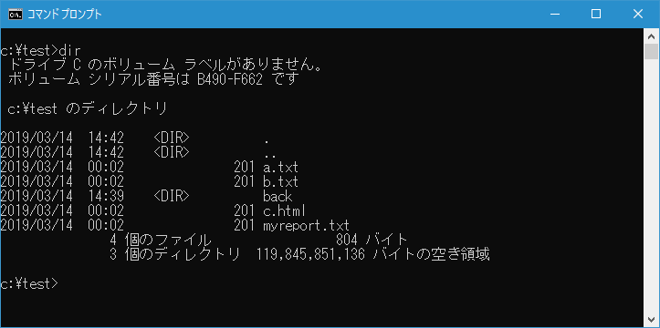
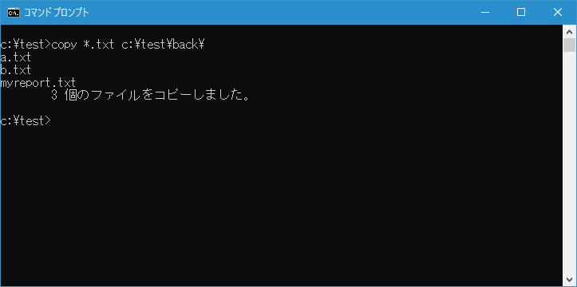
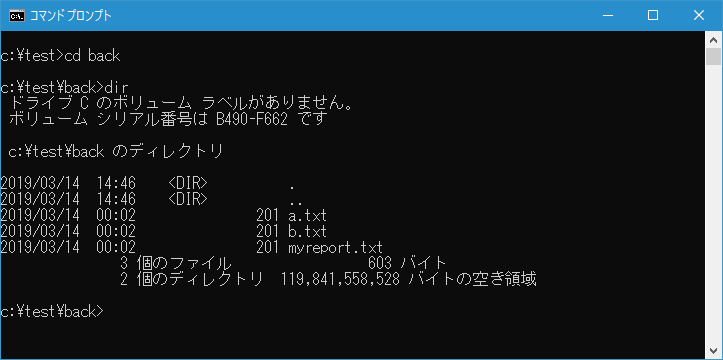

ワイルドカードの使い方
同じようなファイル名をまとめて指定することができるワイルドカードと呼ばれる機能があります。ここではワイルドカードの使い方について解説します。
ワイルドカードとは
コマンドの中にはファイルをコピーする時に使用する COPY コマンドなどのようにファイル名などの引数を取るコマンドがあります。例えば3つのファイルを別のディレクトリにコピーしたい場合を考えてみると、1つ1つコピーする場合は3回 COPY コマンドを実行しなくてはなりません。
copy aaa.html d:\back
copy b.html d:\back
copy cc.html d:\back
3つのファイルならばこのように1つ1つコマンドを実行しても大丈夫ですが、もしファイルが100個もあった場合には大変です。このような場合にワイルドカードを使用すると便利です。
ワイルドカードは任意の文字を表す特殊な文字のことで、条件に一致する複数のファイルをまとめて指定する場合に使用されます。ワイルドカードには次の二つの文字が用意されています。
* 任意の長さの文字(0文字以上)
? 任意の1文字(0文字も可)
実際の使い方から見ていくと分かりやすいので、先ほどのファイルコピーをワイルドカードを使って書き直してみます。3つのファイルをコピーするにはワイルドカードを使えば次のように記述することができます。
copy *.html d:\back
先ほどは3つのファイルを1回ずつに分けてコピーする必要がありましたが、ワイルドカードを使えば1回のコマンド実行で3つのファイルコピーを行うことが可能になります。
ワイルドカードの仕組み
まずファイル名を記述するところにワイルドカードが記述されていた場合、その条件に一致するファイルが存在するかどうかが検索されます。例えば *.html と書かれていた場合、ワイルドカードの「*」は任意の長さの文字列を表しますので、 *.html に一致するファイル名とは「任意の長さの文字列」の後に .html が続くファイル名のことになります。
実際にどのようなファイル名が *.html に一致するのかは次の例を見て下さい。
a.html
index.html
helloworld.html
これらはいずれも任意の文字列の後に .html が付くファイル名です。逆にどのようなファイル名が *.html に一致しないのかは次の例を見て下さい。
a.txt
index.htm
これらはファイル名の最後が .html で終わっていませんので一致しません。
「copy *.html d:\back」のように実行すると、現在のディレクトリにあるファイルの中で *.html に一致するファイルに対してそれぞれ COPY コマンドが実行されます。結果として次のように3回 COPY コマンドが実行されます。
copy aaa.html d:\back
copy b.html d:\back
copy cc.html d:\back
このようにワイルドカードを使ってファイル名を指定することで、条件に一致する全てのファイルに対して同じコマンド実行を行わせることができます。
「*」と「?」の違いについて
「*」は0文字以上の任意の文字列です。先ほどのように *.html と記述すれば「任意の長さの文字列」＋「.html」というファイル名に一致します。また *tokyo* と記述すれば「ファイル名のどこかに「tokyo」という文字列が含まれるファイル名に一致します。
tokyo.txt
tokyosales.doc
2019tokyoshop.html
もう一つのワイルドカードである「?」は任意の1文字に一致するワイルドカードです。例えば report??.txt と記述した場合、どのようなファイルに一致するのかは次を見て下さい。
○ report10.txt
○ reportnh.txt
× reportq85.txt
× reporte4.html
report??.txt に一致するファイル名は「report」＋「任意の1文字」＋「任意の1文字」＋「.txt」に一致するファイル名です。1番目と2番目のファイル名は一致しますが3番目名のファイルは「report」＋3文字＋「.txt」となっているので一致しません。4番目のファイル名は「report」＋2文字＋「.html」となっているので一致しません。
このように「?」の場合は文字の数を絞って一致するファイル名を指定したい場合に便利です。
なおコマンドプロンプトの「?」は0文字についても一致します。先ほどの例で言えば次のようなファイル名にも一致します。
report.txt
reportp.txt
1番目のファイル名は「report」＋1文字＋「.txt」であり1つの「任意の1文字」に一致する部分がありません。ただ「任意の1文字」は0文字にも一致するためこのファイル名は一致することになります。2番目のファイル名は2つの「任意の1文字」がどちらも0文字に一致した場合の例です。コマンドプロンプト以外だとワイルドカードの「?」は0文字に対応していない場合もありますので注意して下さい。
ワイルドカードを使ったサンプル
では実際にワイルドカードを使ったファイルのコピーを試してみます。現在 c:\test ディレクトリに次のようなファイルが保管されています。

*.txt に一致するファイルを c:\test\back ディレクトリにコピーしてみます。次のように実行します。
copy *.txt c:\test\back\

コマンドを実行すると「3 個のファイルをコピーしました。」と表示され、*.txt の一致した3つのファイルがコピーされました。
コピー先の c:\test\back ディレクトリへ移動してみると、3つのファイルがコピーされていることが確認できます。

コマンドプロンプトからコマンドを実行する時にワイルドカードはよく使用しますので、使い方を覚えておいてください。
( Written by Tatsuo Ikura )

著者 / TATSUO IKURA
初心者～中級者の方を対象としたプログラミング方法や開発環境の構築の解説を行うサイトの運営を行っています。